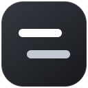

YOUR VIDEO COMPANION
Veloa
A clearer way to listen.
Connect your access code and your voice workspace.
Your access
Connect to the translation service. Your code activates when you first connect.
Your voice workspace
Run OmniVoice in your own Modal account. The local bridge deploys the worker and keeps your deployment token on this computer.
Requires the installed Veloa local bridge. Idle GPU containers scale down after 30 seconds. Deployment may use account credits.
Connect an existing worker
A voice that fits
Choose one voice for each video. Changing the voice reuses your translation.